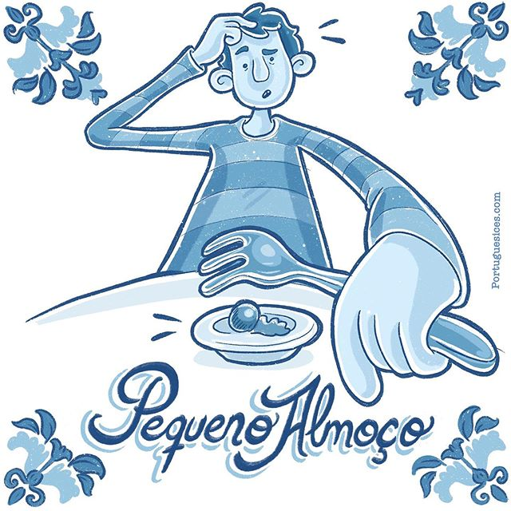
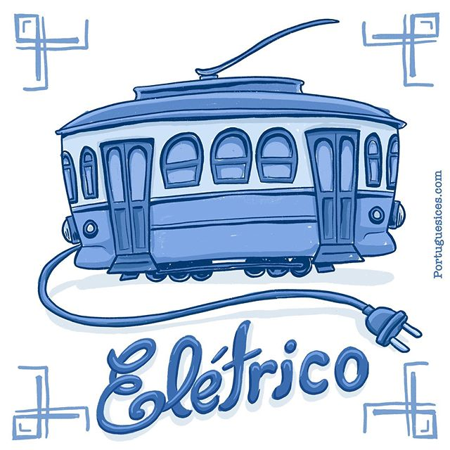
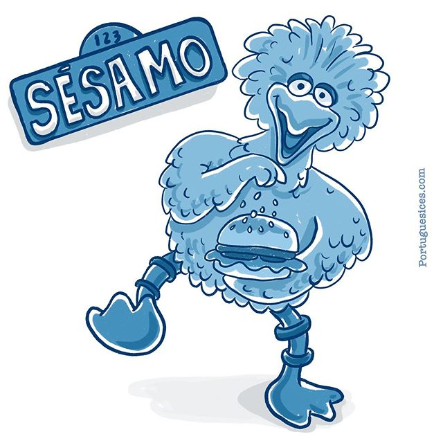
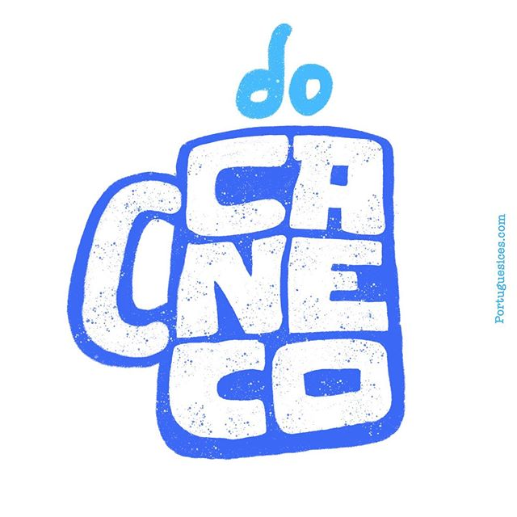
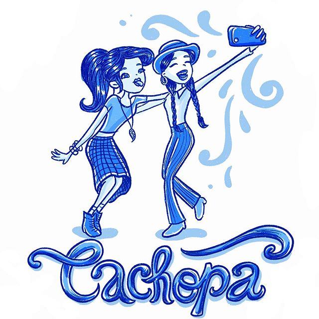
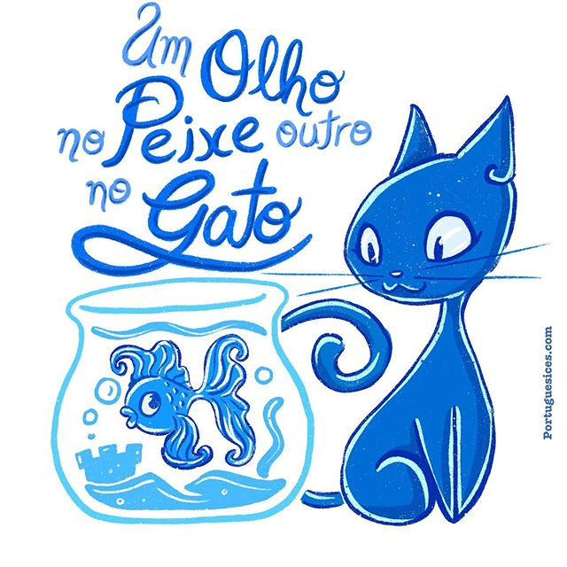
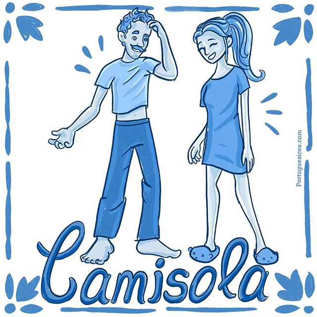

🇵🇹Carcanhol
🇧🇷Dinheiro
🇺🇸Money
🇪🇸Dinero
Às vezes tenho muita dificuldade em entender algumas palavras portuguesas, uma
das
que mais me causou confusão foi quando me disseram que tinham carcanhol no saco.
🇵🇹Gemeos
🇧🇷Panturrilha
🇺🇸Calf
🇪🇸pantorrilla
Se for a uma aula de Yoga em Portugal, lembre-se de que manter os gémeos
alinhados
não tem nada a ver com os irmãos.
🇵🇹piropo
🇧🇷cantada, xaveco
🇺🇸pick-up line
🇪🇸
“Tantas curvas e eu sem travões.†“És como um helicóptero: gira e boa.†“A tua
mãe só
pode ser uma ostra para cuspir uma pérola como tu.”
🇵🇹Batota
🇧🇷Trapaça
🇺🇸Cheating
🇪🇸Hacer trampa
Batota pode ser usada para o ato ou para definir alguém que faz trapaças.
🇵🇹Autoclismo
🇧🇷Descarga
🇺🇸Flush
🇪🇸Rubor
Não, autoclismo não é um tipo de automóvel, um dispositivo que cria um cataclisma
nele mesmo e nem uma modalidade desportiva que mistura automobilismo com ciclismo. Autoclismo é
aquilo
que usamos quando queremos nos livrar daquilo já nos satisfez e agora não nos serve mais.

🇵🇹Badagaio
🇧🇷Desmaiar
🇺🇸Fainting
🇪🇸Desmayo
“Deu-lhe o badagaio†é uma das formas mais comuns de escutar esta expressão.
Dizem
que a palavra tem origem da palavra vagado, que quer dizer vertigem. Mas bem que daria um trava
lÃnguas
interessante... “o papagaio gago teve um badagaio na gaiola.†Repete 3 vezes.
🇵🇹Bué
🇧🇷Muito
🇺🇸A lot
🇪🇸Mucho
Por mais que pareça o choro de uma criança, bué quer dizer muito.

🇵🇹Fixe
🇧🇷Legal
🇺🇸Cool
🇪🇸Bueno
Muitas vezes acompanhado pela expressão bué, o termo fixe está ligado a algo
agradável. Pode ser usado em perguntas como “Tás Fixe?” como “Tudo bem?” e em frases como “isso é
bué da
fixe†para “isso é muito bom”
🇵🇹Tugas
🇧🇷Portugueses
🇺🇸Portuguese
🇪🇸Portugués
Uma das espécies mais importantes encontradas em terras lusitanas são Tugas,
alimentam-se basicamente de vinho, bacalhau e pastéis de nata. Não, não são tartarugas, são essa
malta
bué da fixe, os portugueses.

🇵🇹Vai dar a volta ao bilhar grande
🇧🇷some daqui! Não aborrece
🇺🇸get out!
🇪🇸¡Vete!
Em algumas regiões esta frase pode se tornar ainda mais confusa por trocarem o V
pelo
B, mas se ouvir isso, não estão pedindo para procurar por uma mesa de sinuca e andar ao redor dela.
Isso
quer dizer que você está sendo chato.

🇵🇹Alcatifa
🇧🇷Carpete
🇺🇸Carpet
🇪🇸Alfombra
Pode parecer um espirro daqueles estrondosos, mas não diga “saúde†pra já,
Alcatifa é
apenas carpete.
🇵🇹Passadeira
🇧🇷faixa de pedestre / esteira de exercÃcios
🇺🇸pedestrian crossing / treadmills
🇪🇸paso de peatones / cintas de correr
Pode parecer que estamos falando das senhoras que passam roupas, mas não, em
Portugal
deves usar a passadeira para atravessar a rua. A mesma palavra também serve pra as esteiras de
correr.
🇵🇹Crominho
🇧🇷cdf
🇺🇸nerd
🇪🇸nerd
A versão mais carinhosa de cromo, é vista por alguns como pejorativa, mas pode
referenciar uma pessoa inteligente e aplicada aos estudos.

🇵🇹Bófia
🇧🇷Pol]icia
🇺🇸Police
🇪🇸Policia
Uma bofe mulher, tipo a Gracyanne? Pode até ser, mas em Portugal, quando ouvir
'lá
vem a Bófia', a polÃcia vem aÃ.
🇵🇹Encher a mula
🇧🇷Se empaturrar
🇺🇸Overeat
🇪🇸Comer con exceso
Encher a pança, comer até o #* fazer bico, empanzinar, comer até a tampa, encher
o
bucho... Encher a mula pode ser falado no Brasil de várias formas dependendo da região, qual é a sua
favorita?
🇵🇹Chávena
🇧🇷XÃcara
🇺🇸Tea cup
🇪🇸Taza de té
Tinha que ter relação com chá né? Mas a chávena também serve pro cafezinho ☕️, só
acho que deveria existir um modelo especÃfico chamado cáfena?
🇵🇹Gira
🇧🇷Bonita / Elegante
🇺🇸Beautiful
🇪🇸Hermosa
🔄 É preciso girar a cabeça ou o telemóvel para ver melhor esta ilustração gira
de
uma rapariga gira em uma pose bué da gira. 🙃
🇵🇹Briol
🇧🇷Frio
🇺🇸Cold
🇪🇸Frio
Briol é a balavra usada quando a temperatura está baixa, está frio ou com ventos
frios.
🇵🇹Pêra
🇧🇷Cavanhaque
🇺🇸Goatee beard
🇪🇸Perilla
Péra, não é uma pêra com pêlo ğŸPêra em Portugal são os pelos faciais que formam
a
semi-barba o famoso Cavanhaque no Brasil.
🇵🇹Sapatilhas
🇧🇷Tênis
🇺🇸Sneakers
🇪🇸Zapatillas de deporte
Para comprar aqueles tênis irados em Portugal, procure na seção das sapatilhas.
👟 â‰
🥿 No Brasil, sapatilhas são os sapatos das bailarinas ou sapatos femininos sem saltos.
🇵🇹Caraças!
🇧🇷Caramba!
🇺🇸Damn it!
🇪🇸¡Maldito sea!
🎶Lá com o caraças, Lá com caraças... Parece música mexicana, mas caraças é uma
das
palavras portuguesas mais emblemáticas. Pode ser acompanhada pelo Oh para expressar espanto, pelo o
para
desacordo, por um do para algo positivo ou pelo 'como o' para representar intensidade.
🇵🇹Arrumo-te
🇧🇷Te dou Uma coça
🇺🇸I will punch you
🇪🇸Te rasco
Se alguém lhe disser 'Arrumo-te', cuidado pois esta pessoa pode não estar a ser
cuidadosa consigo, ela quer quebrar tua cara, te dar uma surra, te espancar, dar uma coça, um murro
na
tua fuça, te quebrar, ... 😖
🇵🇹Lamechas
🇧🇷piegas, excessivamente sentimental
🇺🇸slobbery
🇪🇸baboso
Lamechas é a expressão usada para definir coisas excessivamente românticas.
🇵🇹Tou cuma ráfia
🇧🇷Tou com uma fome, Tô cagado de fome
🇺🇸I’m starveling
🇪🇸Estoy hambriento
Esse só pode ser definido com um meme cássico brasileiro
https://youtu.be/yp6lJSFmMMc
🇵🇹Borbulhas
🇧🇷Espinhas
🇺🇸Pimples
🇪🇸Espinillas
🎶Quem me dera ser um peixe, fazer borbulhas de amor ao te encontrar... A
famosa e
enigmática música do Fagner fica ainda mais emblemática em Portugal, onde as borbulhas não são
causadas
por peixes, mas sim as inflamações na pele que muitos temem e toda gente já teve.
🇵🇹Telemóvel
🇧🇷Celular
🇺🇸Mobile Phone
🇪🇸Teléfono móvil
Não parta o teu telemóvel. 😆🚗📱
🇵🇹Aloquete
🇧🇷Cadeado
🇺🇸Padlock
🇪🇸Candado
Consigo entender perfeitamente o porquê dessas coisinhas serem chamadas de
Aloquete
em aportugal. Quem nunca 'aloqueceu' ao tentar todas as chaves em um aloquete e só conseguir abrir
na
última? Acontece sempre comigo 😅
🇵🇹Badochinha
🇧🇷Gordinho
🇺🇸Chubby
🇪🇸Gordito
Com tantos doces e pães gostosos em Portugal é difÃcil não ficar badocha. 😅
🇵🇹Laurear a Pevide
🇧🇷Passear, refrescar a cuca
🇺🇸Take a walk
🇪🇸Dar un paseo
A primeira coisa que pensei quando ouvi esta expressão foi que Laurear a Pevide
seria
algo como Depilar a Axilia, mas não, está mais para refrescar a cabeça, sair por aà sem fazer nada,
vadiar... Esta Portuguesice foi sugerida há quase um ano atrás pela vencedora do nosso primeiro
Passatempo!
🇵🇹Macaco
🇧🇷Meleca
🇺🇸Booger
🇪🇸moco
Um macaco poderia tirar um macaco do nariz de outro macaco enquanto tira um
macaco do
seu próprio macaco? 🐵. Fico confuso com essa macacada toda, mas cá na terrinha, a querida
melequinha
também é chamada de macaco. 💠Ainda não percebi o porquê, alguém sabe explicar?
🇵🇹Boleia
🇧🇷Carona
🇺🇸Lift
🇪🇸Carona
Pode parecer uma semana meio Animal Planet para o @portuguesice , mas boleia não
é um
grande mamÃfero 🋠aquáticoğŸ³, é quando aproveitamos-nos das boas almas motorizadas que vão para o
mesmo
lado que a gente, e vamos juntos. 🤜🤛🚙
🇵🇹Tirar os nabos da púcara
🇧🇷Extrair um segredo de alguém
🇺🇸To find out information
🇪🇸Para encontrar información
Depois que descobri o que é uma púcara ficou mais fácil de entender esta
expressão 😅
🇵🇹Cachaço
🇧🇷Pescotapa
🇺🇸Slap the back of the neck
🇪🇸Golpear la nuca
Cachaço tem vários significados, nenhum deles tem relação com o ato de beber
cachaça.
O significado mais comum refere-se a um tapa na parte de trás do pescoço, um pescotapa. Cachaço
também
pode ser usado para falar da parte posterior do pescoço por si só, pode ser usado para dizer que o
pescoço é grosso, que alguém é arrogante, soberbo e na Madeira pode ser usado para porco reprodutor.
🇵🇹Banda Desenhada
🇧🇷Histórias em quadrinhos
🇺🇸Comics
🇪🇸Historietas
A Portuguesice de hoje é uma homenagem à histórias que fizeram parte da minha
infância e que descobri recentemente que também são bué conhecidas cá em Portugal, as histórias em
quadrinhos, ou banda desenhada, da @turmadamonica . Sei que faltou a Mônica, mas é porque ela
está Ã
procura do Sansão, que o Cebolinha escondeu dentro do tambor.
🇵🇹Chuço
🇧🇷Guarda-chuva
🇺🇸Umbrella
🇪🇸Paraguas
Chuço é usado no Norte de Portugal para guarda-chuva, mas originalmente a palavra
era
usada para designar um tipo de lança pontiaguda. 🌂 A origem do uso desta palavra para
representar
Guarda-chuvas vem da empresa Chussol, que fabricava grande parte dos guarda-chuvas que eram vendidos
por
Portugal e que por isso passaram a ser chamados de Chuço por cá. É tipo o bombril no Brasil para
esponjas de aço, uma marca que virou sinônimo do produto. ☔️

🇵🇹Disfarce
🇧🇷Fantasia
🇺🇸Costume
🇪🇸Disfraz
É Carnaval, época de vestir o disfarce, ou a fantasia, e cair na folia, nem que
seja
pra ver os desfiles na TV ou maratonar uma série na internet 😅
🇵🇹Matrafona
🇧🇷Homem com fantasia de mulher
🇺🇸Man with an exaggerated woman costume
🇪🇸Hombre con traje de mujer
Muitos homens tem uma matrafona em seu interior que desabrocha sempre nesta época
do
ano.
🇵🇹Virar o Barco
🇧🇷Chamar o Raul
🇺🇸Barf
🇪🇸Vomitar
Malta, cuidado pra não beber demais neste carnaval e acabar virando o barco. 🤢
Virar o barco é uma expressão usada em Portugal para vomitar. 🤮 No Brasil há varias formas de
expressar esta ação dependendo da região.
🇵🇹Bulir
🇧🇷Ir trabalhar
🇺🇸Go to work
🇪🇸Ir al trabajo
Pode parecer a ação de colocar algo a ferver em um bule, mas a menos que você
trabalhe em um café, este não é o real significado da palavra bulir. Há outros significados
ligados a
mexer ou bagunçar, porém coloquialmente bulir é utilizado em Portugal como o ato de ir ao trabalho.

🇵🇹Rapariga
🇧🇷Moça
🇺🇸Girl
🇪🇸Muchacha
A portuguesice de hoje é uma homenagem a todas as raparigas, meninas, senhoras,
mulheres que lutam todos os dias por respeito e igualdade. O mundo precisa da vossa coragem e força
para
mudar #lutecomoumarapariga
🇵🇹Lugar do Morto
🇧🇷Assento do carona
🇺🇸Ride Shotgun
🇪🇸lado del pasajero
Gente, Chama o Presidente Marcelo, a gente tem que mudar isso aà para algo mais
agradável, tipo lugar do amiguinho ou algo assim... Agora só ando no assento de trás.
🇵🇹Fronha
🇧🇷Cara feia
🇺🇸Angry face
🇪🇸Cara enfadada
Tem gente que já acorda com cara de fronha amassada... vamos colocar um sorriso
nesses rostos aà gente bonita! ğŸ˜

🇵🇹Acordaste com os pes parafora da cama?
🇧🇷Acordar mau humorado
🇺🇸Wake up grumpy
🇪🇸Despierta gruñón
Quem nunca teve um mau dia né? Se o seu colega está mau humorado hoje,
ofereça-lhe
um chocolatinho, resolve 60% dos casos, ou apenas ofereça a tua compreensão. 😉
🇵🇹Chaço
🇧🇷lata-velha
🇺🇸Clunker
🇪🇸chatarra
Esta expressão normalmente é falada da seguinte forma: “Pá cá ganda chaço máno”
Refere-se aquela caranga que mesmo não estando em perfeitas condições é como um membro da famÃlia e
ainda tem um valor sentimental para alguém... ou não, pode ser só uma lata velha mesmo.
🇵🇹Gelado
🇧🇷Sorvete
🇺🇸Ice cream
🇪🇸Helado
🍨🍦🍧❄️ Em Portugal o adjetivo também é um substantivo, e faz todo o sentido,
pois só se pode comer um gelado se ele estiver gelado, senão ele deixa de ser um gelado. 🤔
🇵🇹Golo
🇧🇷Gol
🇺🇸Goal
🇪🇸Gol
Palavra usada para definir a pontuação em um jogo de futebol, quando a bola passa
pelas balizas
🇵🇹Canalha
🇧🇷Criançada
🇺🇸Children
🇪🇸Niños
Parece ofensivo, mas em Portugal usa-se esta palavra como um coletivo de criança
🥺
🇵🇹Palhinha
🇧🇷Canudinho
🇺🇸Straw
🇪🇸Paja
Hoje vamos falar sobre um dos maiores vilões dos sete mares. No Brasil, Canudos,
em
Portugal, Palhinhas, são responsáveis pela morte de 1 milhão de pássaros e 100.000 animais marinhos
por
ano. O grande problema destas coisinhas é que são usadas por alguns poucos minutos, apenas uma
vez, e
levam 200 anos para se decompor na natureza. Muitos acabam por parar nos mares, são confundidos com
alimento pelos animais que acabam por morrer sufocados ou desidratados. 🋠Convenhamos, estas
coisinhas de plástico nem são tão úteis né? 😉 .
🇵🇹Finos
🇧🇷Chopp
🇺🇸Draft Beer
🇪🇸Cerveza de barril
🍺No Porto aquele choppinho esperto é conhecido como Fino, pois normalmente é
servido
em copos finos e altos. 🍻
🇵🇹Contribuinte na fatura?
🇧🇷CPF na nota?
🇺🇸Contribuente on the bill?
🇪🇸¿Contribuyente en la factura?
Esta pergunta sempre aparece no caixa de pagamento em supermercados e lojas. É
o
equivalente ao “CPF na nota?†Que escutamos em algumas cidades do Brasil. Trata-se de uma medida
do
governo para evitar a sonegação, a venda de produtos sem pagamento dos impostos. Ao solicitar o
número de contribuinte na Fatura é possÃvel receber de volta, uma vez por ano, parte do valor pago
em
impostos, normalmente em maio perto do verão, o que vem bem a calhar 😄
🇵🇹Fino como um rato
🇧🇷Malandro
🇺🇸Trickster
🇪🇸Tramposo
ğŸ Fino como um Rato é uma expressão utilizada para designar alguém esperto,
malandro, que pode passar a perna de forma inteligente para atingir seus objetivos.
🇵🇹Cibo
🇧🇷Pequena quantidade de comida
🇺🇸Small amount of food
🇪🇸Pequeña cantidad de comida
Mais comum em Trás os Montes e na região do Minho, esta expressão é utilizada
para se
referir a uma pequena quantidade de comida, como por exemplo: “vou comer um cibo de pão”. Mas há que
use
para outras coisas como estar um cibo cansado.
🇵🇹Badalhoco
🇧🇷Porcalhão
🇺🇸Slob
🇪🇸Pantano
Badalhoco é uma palavra engraçada de se dizer, mas pode ser ofensiva para algumas
pessoas. Em Portugal, um badalhoco ou badalhoca, é alguém sem higiene ou bagunceiro, um porco 🐷 mas
não
o animal.
🇵🇹Atacadores
🇧🇷Cadarço
🇺🇸Shoelace
🇪🇸
Eles não vão te atacar, mas vão manter as tuas sapatilhas ajustadinhas
🇵🇹Bica
🇧🇷Cafezinho
🇺🇸Small Coffee
🇪🇸Cordon de zapato
Mais comum em Lisboa, o termo Bica ou biquinha é utilizado para aquele cafezinho
espresso esperto, que normalmente é mais suave que o italiano e mais forte que o brasileiro. Muitos
portugueses já me disseram que acham o café do Brasil muito fraco, mas de amargo já basta a vida não
é?
ğŸ˜

🇵🇹Nabice
🇧🇷Burrice
🇺🇸Silliness
🇪🇸TonterÃa
Em Portugal uma nabice não é um tipo de refeição feita com nabos, é aquela
atitude
que as vezes fazemos sem pensar muito bem. Alguns são especialistas nisto, outros afirmam com todas
as
letras que não fazem esse tipo de coisa, mas quem nunca cometeu uma nabicezinha, né? 😅
🇵🇹Gasoleo
🇧🇷Diesel
🇺🇸Diesel Fuel
🇪🇸Diesel
⛽️ Em apenas 48 horas a greve dos camionistas provocou o caos em Portugal. Falta
gasóleo nas principais bombas do paÃs. O gasóleo, ou diesel é o principal combustÃvel dos carros
portugueses. Será que agora o mercado dos carros elétricos “dá um gás”? ğŸ˜
🇵🇹Mezinha
🇧🇷Remédio caseiro
🇺🇸Homemade Medicine
🇪🇸Medicina casera
Mezinha, não confundir com mesinha, são aqueles remedinhos de vó, aquelas
receitas
caseiras que passam de geração para geração. .
🇵🇹Mica
🇧🇷Capa plástica
🇺🇸Plastic folder
🇪🇸Carpeta de plástico
Mica ou miquinha não é uma espécie de macaco fêmea, mas um tipo de envelope ou
capa
plástica usada para guardar documentos
🇵🇹Deitar Fora
🇧🇷Jogar Fora
🇺🇸Throw away
🇪🇸tirar la basura
Deitar fora é uma expressão muito usada em Portugal e sempre me faz confusão,
penso
na pessoa indo deitar fora, literalmente 😅
🇵🇹Deu o Berro
🇧🇷Parou de funcionar
🇺🇸Stopped working
🇪🇸Dejó de funcionar
Quando algo dá o berro, deu seu ultimo suspiro antes de deixar de funcionar,
avariou.
Na maioria das vezes quem dá um berro são os donos dos aparelhos, mas um berro de desespero por
perder aquele telemóvel de mil euros, aquela TV toda xpto ou aquele relógio boladão.
🇵🇹Cruzeta
🇧🇷Cabide
🇺🇸Hangers
🇪🇸Perchas
Uma pequena Cruz? Não, cruzetas por cá são usadas para pendurar a roupa, os
cabides
no Brasil.
🇵🇹Cabeça de Alho chocho
🇧🇷Cabeça de vento, Esquecido
🇺🇸Forgetful
🇪🇸Olvidadizo
A expressão é usada pra pessoas distraÃdas, que esquecem muito das coisas.
🇵🇹Rotunda
🇧🇷Rotatória, balão
🇺🇸Roundabout
🇪🇸Rotonda
Não sei o porquê, mas a palavra rotunda me lembra o vÃdeo do Silvio Santos e o
bambú.
🇵🇹Monstros
🇧🇷Eletrodomésticos velhos
🇺🇸Old appliances
🇪🇸
Ontem, andando por Castro Laboreiro, me deparo com uma daquelas caixas grandes de
lixo e as inscrições “recolha de monstros”. Na hora me afasto com um pequeno susto, mas lá dentro só
haviam uns eletrodomésticos quebrados. Nada de Sully ou Mike.
🇵🇹Estou com Azeites
🇧🇷Estou enfezado
🇺🇸I’m angry
🇪🇸Estoy furioso
😠Estar com azeites é uma expressão que pode ser usada quando se está aborrecido
ou
mal-humorado, mas há pessoas que também usam esta frase quando se sentem tristes.
🇵🇹Mãe Babada
🇧🇷Mãe babona
🇺🇸Mother hen
🇪🇸Madraza
Em Portugal celebra-se o dia da mãe no primeiro domingo de maio, no Brasil é
comemorado no segundo domingo .
🇵🇹Jogo da Macaca
🇧🇷Amarelinha
🇺🇸Hopscotch
🇪🇸Rayuela
Já percebeu que em Portugal a palavra macaco(a) é usada para muita coisa? 💠E
nem há
macacos por aqui 🵠.
🇵🇹Barril
🇧🇷Supimpa
🇺🇸Nice
🇪🇸Agradable
Baril é uma gÃria antiga, assim como supimpa, maneiro e bacana no Brasil, usada
para
algo ou alguém que tem qualidades positivas, é o avô do “Fixe†.
🇵🇹Colunas
🇧🇷Caixas de som
🇺🇸Speakers
🇪🇸Altavoces
Se alguém disser que vai comprar umas colunas, provavelmente não estão a falar da
estrutura óssea que sustenta nosso corpo, mas sim das 🔈 Caixas de Som. As sem fio, que se conectam
ao
telemóvel pra tocar uns tuti tuti tu 🎶 são muito populares por cá entre os que adoram incomodar a
todos. 😅

🇵🇹Pequeno Almoço
🇧🇷Café da Manhã
🇺🇸Breakfast
🇪🇸Desayuno
Pequeno almoço é a refeição feita pelos portugueses na parte da manhã, mas não é
o
brunch. E jantar não é grande almoço, é só jantar mesmo.

🇵🇹Babete
🇧🇷Babador
🇺🇸Bib
🇪🇸
Babete é o acessório usado para poder babar à vontade sem sujar a camisa 🤤
🇵🇹Libelinha
🇧🇷Libélula
🇺🇸Dragonfly
🇪🇸
Gente, tem nome mais fofo para um inseto do que libelinha? Com quem temos que
falar
pra mudar essa palavra no Brasil? .
🇵🇹Banana
🇧🇷Pochete
🇺🇸Moneybelt
🇪🇸
🌠Aquelas bolsas muito bacanas, usadas na cintura por pessoas muito cool, em
Portugal são chamadas de banana, no Brasil são as Pochetes. Pochete em Portugal são pequenas bolsas
usadas por mulheres, principalmente em festas. 👝
🇵🇹Ao Calhas
🇧🇷Aleatoriamente
🇺🇸Randomly
🇪🇸Al azar
Possivelmente uma derivação da palavra calhar, é usada para se referir a algo que
acontece por acaso.

🇵🇹Pachorra
🇧🇷Paciência
🇺🇸Patience
🇪🇸Paciencia
Pachorra não é uma espécie de cachorrinhas pequenas, cabeçudas e agitadas, muito
pelo
contrário, é a capacidade de lidar com as coisas sem pressa, com tranquilidade.
🇵🇹Atirar o Barro à parede
🇧🇷Dizer algo para ver se cola
🇺🇸Say something to try to convince
🇪🇸SDi algo para tratar de convencer
Termo usado também em algumas regiões do Brasil.

🇵🇹Aflito
🇧🇷Apertado
🇺🇸when a person have to pee urgently
🇪🇸Cuando una persona tiene que orinar con urgencia
A palavra aflição no Brasil é usada com um outro sentido, mas o sentimento de
quando
se está desesperadamente à procura de uma casa de banho é exatamente esse. 😅

🇵🇹Estou feita num 8
🇧🇷Estou toda quebrada
🇺🇸I'm full of pain
🇪🇸
Esta expressão é usada para demonstrar muito cansaço ou quando se está com dores
no
corpo.

🇵🇹Elétrico
🇧🇷Bondinho
🇺🇸Cableway
🇪🇸
É muito difÃcil andar pelos centros do Porto e de Lisboa sem encontrar um
elétrico.
Esses trenzinhos meio vintages fazem parte da identidade histórica e cultural de Portugal.
🇵🇹Esgalahar
🇧🇷Chover muito; fazer algo rapidamente
🇺🇸Heavy Rain; Do something quickly
🇪🇸Lluvia Pesada; Haz algo rapido
Esgalhar é uma palavra usada em diversas situações, na maior parte delas envolve
algo
a acontecer rapidamente
🇵🇹Rambóia
🇧🇷Farra
🇺🇸Spree
🇪🇸Juerga
ğŸ Rambóia não é uma Jiboia vestida de Rambo, nem o Rambo com bóias. Em Portugal
Rambóia é a expressão usada para uma farra, bebedeira. 🎉
🇵🇹Pivete
🇧🇷Mau cheiro
🇺🇸Stinky
🇪🇸Apestosa
Pivete em portugal não é uma expressão para criança que rouba coisas, como no
Brasil,
mas está relacionado com um mau cheiro, ou chulé. A forma de falar também é diferente, no Brasil
fala-se
como se fosse Pivéte, com o primeiro é mais aberto, e em Portugal seria mais como Pivête, com o ê
mais
fechado.
🇵🇹Ó Pá
🇧🇷*sem tradução
🇺🇸*untranslatable
🇪🇸
Está é uma das expressões mais usadas em Portugal e que simplesmente pode dizer
qualquer coisa, desde chamar alguém até, o uso mais comum, como uma interjeição para algo positivo,
negativo, neutro... Enfim, é uma Portuguesice Portuguesa com certeza.
🇵🇹Clara em Castelo
🇧🇷Clara em neve
🇺🇸Whipped egg whites
🇪🇸Claras de huevo batidas
Ingrediente fundamental em muitas receitas de patisserie, a Clara em ❄️ ou 🏰
consiste em bater a claras de 🥚 até que fique consistente. ...pode também levar alguém chamada
Clara Ã
Serra da Estrela ou à um dos castelos portugueses 😅
🇵🇹Quando o Rei faz Anos
🇧🇷Raramente
🇺🇸Rarely
🇪🇸Raramente
No dia em que o rei faz anos é uma expressão usada para se referir a algo que
acontece poucas vezes. On the King’s birthday is a Portuguese expression that refers to
something
that rarely happens.
🇵🇹Cascos de Rolha
🇧🇷Lá onde Judas perdeu as botas.
🇺🇸At the ends of the earth
🇪🇸Donde Judas perdió sus botas
Alguém sabe para onde fica Cascos de Rolha? E por quê raios esse lugar tem esse
nome?
🇵🇹Esferovite
🇧🇷Isopor
🇺🇸Styrofoam
🇪🇸Espuma de poliestireno
Não são vinte esferas juntas, nem alguma ferramenta usada pelos videntes.
Esferovite
é um tipo de plástico, o poliestireno expandido, normalmente usado em embalagens que conservam a
temperatura.
🇵🇹Benjamim
🇧🇷Caçula
🇺🇸Youngest son
🇪🇸Hijo menor
Benjamim no Brasil é um adaptador de tomada/ficha, normalmente com três entradas,
pode também ser o nome de alguém. Em Portugal é a forma como refere-se ao filho mais novo, mais
querido
ou a uma pessoa mais jovem em um grupo.
🇵🇹Auriculares
🇧🇷Fones de ouvido
🇺🇸Earphones/ headphones
🇪🇸Auriculares
🇵🇹Caralho
🇧🇷Cesto da Gávea
🇺🇸Crow’s nest
🇪🇸
A expressão “Vai para o caralho†surgiu nos navios, quando algum marinheiro era
penalizado ao ser enviado para a parte mais alta do navio, de onde se observa o horizonte para
identificar perigo ou terra à vista. Por ser muito alto e estreito, o caralho não é um dos melhores
lugares para se estar, causando náuseas e vertigens. Imagina gregar lá de cima.
🇵🇹Festinhas
🇧🇷Acariciar o bichinho de estimação
🇺🇸Petting
🇪🇸Caricias
Pode até ser uma festinha como os brasileiros conhecem, mas em Portugal quando
alguém
diz que está a fazer festinhas, pode ser que esteja a dar uma atençãozinha, brincar e fazer carinhos
num
pet. Então não espere bolo, guaraná e muitos doces pra você.

🇵🇹Sésamo
🇧🇷Gergelim
🇺🇸Sesame
🇪🇸Sésamo
Ah, agora eu entendo o nome daquela série dos bichos estranhos @sesamestreet ou
#vilasesamo. Nunca vi, eles fazem #bigmac por lá com cebola, picles num pão com gergelim?
🇵🇹Ementa
🇧🇷Cardápio
🇺🇸Menu
🇪🇸
Também é usada em restaurantes, mas não é menta, nem hortelã. Se alguém lhe
perguntar
sobre ementa querem saber do menu mesmo.
🇵🇹Testo
🇧🇷Tampa de panela
🇺🇸Pan lid
🇪🇸Tapa de sartén
A junção de varias palavras com uma estrutura sintática e semantica? Não. Aquilo
que
temos acima das nossas sombracelhas e que em alguns vai até a parte superior da cabeça? Também não.
Testo é a tampa da panela.
🇵🇹Pastilha Elástica
🇧🇷Chiclete
🇺🇸Bubble gum
🇪🇸Chicle
Está faz todo o sentido! São pastilhas e são elásticas!
🇵🇹Cacifo
🇧🇷Armário
🇺🇸Lockers
🇪🇸Taquillas
Cacifos sãos os pequenos armários normalmente disponibilizados nos balneários de
ginásios, em escolas e em algumas empresas, aonde se guardam as coisas. Na maioria das vezes é
preciso
ter seu próprio aloquete para fechar.
🇵🇹Balneário
🇧🇷Vestiário
🇺🇸Locker Room
🇪🇸Vestuario
No Brasil balneário é um conjunto de praias, em Portugal é o local aonde as
pessoas
se banham e se vestem em ginásios, escolas, empresas...
🇵🇹Ginásio
🇧🇷Academia
🇺🇸Gym
🇪🇸Gimnasio
Ginásio para alguns #brasileiros é um tipo de escola de ensino secundário. Em
#Portugal é como são chamados os locais onde a malta vai #treinar.
🇵🇹Borla
🇧🇷Grátis
🇺🇸Free
🇪🇸Gratis
Parece um Mineirinho, bem lá do interior de Minas Gerais, falando bola, mas de
borla
ou à borla é a expressão usada quando algo é de graça.
🇵🇹X-ato
🇧🇷Estilete
🇺🇸Box cutter
🇪🇸
O Wolverine é um X-men bem chato mesmo, mas não é a ele que chamamos de x-ato,
esta é
a palavra usada para as safety knifes ou estiletes como são chamadas em algumas regiões do Brasil.
🇵🇹SuÃças
🇧🇷Costeletas
🇺🇸Sidewhiskers
🇪🇸Patillas
SuÃças em Portugal não é uma expressão utilizada apenas para as habitantes da
SuÃça,
mas pode referir-se a parte da barba que cresce nas laterais do rosto.
🇵🇹Patilhas
🇧🇷Costeletas
🇺🇸Sidewhiskers
🇪🇸Patillas
Este é o Tio Patilhas, com suas belas patilhas faciais, a partilhar convosco que
a
sua linda patinha é chamada carinhosamente de Florentina Esquerda da Silva.
🇵🇹Pavonear
🇧🇷Se exibir com vaidade
🇺🇸Show off with vanity
🇪🇸Presumir con vanidad
Pavonear é o ato de se adornar para se exibir por aÃ, se mostrar.
🇵🇹À Pinha
🇧🇷Cheio de gente
🇺🇸Crowded
🇪🇸Concurrida
À pinha não é quando um lugar está cheio de pinhas, é a expressão usada quando um
lugar está cheio de gente, e este lugar não precisa necessariamente ser uma pinha.
🇵🇹Casa de Banho
🇧🇷Banheiro
🇺🇸Bathroom
🇪🇸Baño
Antigamente, pra evitar a proliferação de doenças, era comum haver um ambiente
separado da casa para quando a natureza chamava e para quando o corpo tinha tão mal odor que era
impossÃvel estar em um ambiente social, um banho era questão de vida ou morte. À essas casinhas
dava-se
o nome de casa de Banho, quando estavam dentro da estrutura da casa eram o quarto de banho. Até hoje
usa-se tanto casa de banho como quarto de banho para o banheiro interno, externo, comercial, em
aeroporto, público, sem a parte de banho... mas quando só tem a parte de banho coletivo, em
ginásios,
escolas, empresas, já não é mais casa de banho, é balneário.
🇵🇹Fita Cola
🇧🇷Durex / Fita adesiva
🇺🇸Scotch tape
🇪🇸Cinta adhesiva
Atenção brasileiros, ao comprar fita adesiva em Portugal é melhor não pedir
durex,
pois vão acabar te entregando preservativos.

🇵🇹2-1/4
🇧🇷Quinze pras duas
🇺🇸Quarter to two
🇪🇸Un cuarto para las dos
Os portugueses gostam de dizer as horas com um cálculo de subtração, para os
brasileiros é mais comum dizer o quanto falta para a próxima hora. Por que as pessoas não
simplificam e
dizem apenas a hora?
🇵🇹Pioneses
🇧🇷Tachinhas
🇺🇸Thumbtacks
🇪🇸Chinchetas
Pioneses são aquele pequenos pregos com a cabeça chata ou com uma peça de
plástico,
normalmente usados para prender papel.
🇵🇹Verter
🇧🇷Derramar
🇺🇸Pour
🇪🇸Verter
Não são duas palavras, ver e ter, é uma só e quer dizer derramar, entornar,
despejar.
Como ficaria aquela expressão “Não adianta chorar pelo leite derramado�
🇵🇹Coscuvilhar
🇧🇷Fofocar
🇺🇸Gossip
🇪🇸Chisme
Um hábito comum em todo o mundo é o de falar da vida alheia, em Portugal não é
diferente, há muitas cuscas que coscuvilham bué. 😅
🇵🇹Plasticina
🇧🇷Massinha de modelar
🇺🇸Play dough
🇪🇸Plastilina
Tá aà um brinquedo que eu adorava quando criança. Quando ia a alguma papelaria
sempre pedia massinha. Adorava também aquelas animações em stop motion feitas com massinha,
alguém
lembra do Pingu?
🇵🇹Pestana
🇧🇷CÃlios
🇺🇸Eyelashes
🇪🇸Pestañas
Pestana é a palavra usada para definir os pequenos pelos que temos nas pálpebras.
No Brasil usa-se cÃlios, mas é normal usar a expressão “Tirar uma pestana“ quando se vai dormir um
pouco, cochilar.

🇵🇹Vergar a Mola
🇧🇷Ir trabalhar
🇺🇸Go to work
🇪🇸Ir al trabajo
A expressão serve também para o ato de curvar-se para fazer algo, como escrever
ou
ler.

🇵🇹Nódoa
🇧🇷Mancha
🇺🇸Splotch
🇪🇸Mancha
Nódoa parece um nome de pessoa mas é a palavra usada para mancha. Também há a
versão
nódoa negra, para manchas na pele. Dizer que alguém é uma nódoa significa que a pessoa não é boa em
fazer as coisas.

🇵🇹Desampara-me a Loja
🇧🇷Me deixa em paz
🇺🇸Leave me alone
🇪🇸Déjame solo
Se alguém lhe pedir para desamparar a loja, não fique confuso procurando uma loja
para deixar sem amparo, a pessoa apenas quer ficar sozinha.
🇵🇹Reforma
🇧🇷Aposentadoria
🇺🇸Retirement
🇪🇸Jubilación
Se escutar velhinhos a dizer que vão para a reforma, eles não estão indo para
obras
mas sim se aposentando.
🇵🇹Restauração
🇧🇷Praça de alimentação
🇺🇸Food court
🇪🇸plaza de alimentación
Outra expressão que parece, mas pode não estar necessariamente relacionada Ã
construção, restauração é usada para designar o local onde estão os restaurantes em áreas como os
centros comerciais.
🇵🇹Berlinde
🇧🇷Bola de gude
🇺🇸Marble
🇪🇸Metra
As pequenas bolinhas de vidro que ESN muito populares entre as crianças
antigamente,
em Portugal são conhecidas como Berlindes.
🇵🇹Aguarela
🇧🇷Aquarela
🇺🇸Watercolor
🇪🇸Acuarela
Em Portugal aquarela tem uma leve diferença em relação a palavra usada no Brasil.
😆

🇵🇹Dor de Burro
🇧🇷Dor no abdômen durante a corrida
🇺🇸Abdominal pain during running
🇪🇸Dolor abdominal al correr.
Sabe aquela dor que aparece as vezes depois durante uma corrida? Em Portugal esta
dor
é chamada de Dor de Burro.
🇵🇹Calhau
🇧🇷Pedra ou pessoa pouco inteligente
🇺🇸Stone or unintelligent person
🇪🇸Piedra o persona no inteligente
Em algumas regiões, chamar alguém de calhau é uma espécie de ofensa à s
capacidades
intelectuais da pessoa. Na maioria das regiões é usado só pra pedra mesmo.
🇵🇹Bilha
🇧🇷Botijão de gás; Um conjunto de nádegas
🇺🇸Gas canister; Backside
🇪🇸Recipiente de gas; Trasero
Está é mais uma expressão com múltiplos sentidos em Portugal. Bilha é a palavra
usada
para definir um tipo de vaso, o recipiente que contém o gás para uso doméstico ou um conjunto de
nádegas, o bumbum, traseiro, buzanfa...
🇵🇹Andar às Carachuchas
🇧🇷Andar de cavalinho
🇺🇸Piggyback
🇪🇸Andar a Babuchas
Expressão mais comum no norte de Portugal. Em outras regiões também usa-se Andar
à s
Cavalitas (Cabalitas no Porto).
🇵🇹Caimão
🇧🇷Espécie de Jacarés
🇺🇸Alligators
🇪🇸Caimanes
Só eu acho um pouco pesada a palavra Caimão, para definir algumas das espécies de
crocodilo da América do sul? Acaba por ser um tipo de alerta: 'Não faças festinhas no caimão ou ele
arranca a tua mão.'
🇵🇹Bicha
🇧🇷Fila
🇺🇸Line
🇪🇸
Muah my darlings. Em Portugal a palavra bicha também é usada para representar
fila.
🇵🇹Lume
🇧🇷Fogo
🇺🇸Fire
🇪🇸Fuego
🔥 Aquela expressão muito falada para as crianças no Brasil, que dizem que a
comida
está quente, “foi feito no fogo”, em Portugal fica: “foi feito ao lume”. Lume é a palavra usada
para
um fogo que tem alguma utilidade especÃfica, por exemplo para fazer comida, para uma fogueira, em
uma
vela. 🕯 Mas essa palavra também pode ser usada para descrever a superfÃcie de um espelho, para
representar esperteza, para dizer que as cores de algo estão vivas ou para falar de um calor. Enfim,
coisa pra caraças.

🇵🇹Do Caneco
🇧🇷Pra caramba; algo grande, impressionante
🇺🇸something great, impressive
🇪🇸algo genial, impresionante
Diz-se do caneco algo ou alguém impressionante ou que faz algo grandioso, digno
de
ganhar uma taça de um campeonato.
🇵🇹Picheleiro
🇧🇷Encanador
🇺🇸Plumber
🇪🇸Fontanero
Picheleiro é o profissional especializado em canalização de água, gás e esgoto.
🇵🇹Duplos
🇧🇷Dublê
🇺🇸Stuntman
🇪🇸Doble
O profissional que substitui o ator em cenas que envolvem perigo em Portugal é
chamado de duplo.
🇵🇹É Canja
🇧🇷É melzinho na chupeta
🇺🇸It’s a piece of cake
🇪🇸Está chupado
Gente, adoro esta expressão, há dezenas de formas diferentes de falar que algo é
fácil em todas as lÃnguas.
🇵🇹A relva da vizinha é melhor que a minha
🇧🇷 A grama do vizinho é sempre mais verde
🇺🇸the neighbor's grass is always greener
🇪🇸El césped siempre está más verde al otro lado de la valla
Expressão usada para representar o constante descontentamento que as pessoas tem,
achando que os outros são melhores ou mais felizes.
🇵🇹Trotinete
🇧🇷Patinete
🇺🇸Scooter
🇪🇸MonopatÃn / patinete
🛴 Uma nova moda de trotinetes elétricas está dominando as ruas.
🇵🇹A galinha da vizinha é sempre melhor que a minha
🇧🇷A grama do vizinho é sempre mais verde
🇺🇸the neighbor's grass is always greener
🇪🇸El césped siempre está más verde al otro lado de la valla
Expressão usada para representar o constante descontentamento que as pessoas tem,
achando que os outros são melhores ou mais felizes.
🇵🇹Pão de Forma
🇧🇷Kombi
🇺🇸Kombi
🇪🇸Kombi
Malta! Alguém me explica o motivo dessa complexidade da #Portuguesice de hoje?
O
mundo inteiro chama o carro de #Kombi, mas em Portugal é pão de forma. E se uma mãe der um
dinheirinho para o filho ir buscar pão de forma e ao invés de voltar com um pacote de @bimbo_pt ele
voltar com uma Kombi brinquedo? A culpa não é dele, é dessa expressão confusa. Vamos mudar
isso e
parar de dar nomes de comidas às coisas e as pessoas né?
🇵🇹Caiador
🇧🇷Pintor de paredes, normalmente os que usam cal
🇺🇸Wall Painter, usually those who use quicklime or burnt lime.
🇪🇸Pintor de paredes, generalmente aquellos que usan cal
Caiador é uma expressão que nem todo Português conhece, pois é mais comum no
Alentejo, onde há muitas casas brancas, pintadas com cal.
🇵🇹Badocha
🇧🇷Gorducho
🇺🇸Punchy | Potbellied
🇪🇸Gordito
Badocha é a expressão usada para descrever uma pessoa gordinha.
🇵🇹Frigorifico
🇧🇷Geladeira
🇺🇸Refrigerator
🇪🇸Refrigerador
No Brasil a palavra frigorÃfico também é usada, mas não para o mesmo equipamento
que
em Portugal, é usada para um lugar aonde guarda-se coisas como carnes num talho.
🇵🇹Gironda
🇧🇷Javali fêmea
🇺🇸Female wild boar
🇪🇸Jabalà hembra
A expressão Gironda é usada para representar uma javali fêmea ou uma porca mais
velha.
🇵🇹Copianço
🇧🇷Cola
🇺🇸Cheat
🇪🇸Chuletas
Copianço ou cábula são as expressões usadas para aqueles papeizinhos com as dicas
para as questões das provas, as famosas colas do Brasil.
🇵🇹Calças de Ganga
🇧🇷Calça Jeans
🇺🇸Jeans
🇪🇸Vaqueros
👖 Não sei se este tipo de calça é usada apenas por gangues de mulheres, mas é
assim
que toda gente conhece estas calças por cá.
🇵🇹Retrete
🇧🇷Vaso sanitário
🇺🇸Baño / Inodoro / Vater
🇪🇸Toilet
🚽 O trono de louça, celite bocão, cadeira dos pensamentos, sanita ou vaso em
Portugal é chamado de retrete ou de sanita.
🇵🇹Cave
🇧🇷Porão
🇺🇸Basement
🇪🇸Sótano
Normalmente é usada para guardar coisas, em algumas casas é usada como adega ou
para
gravar programas do YouTube, como o do apresentador Nuno Markl. É quase uma caverna, mas não é
bem
isso, cave é a expressão usada para denominar a parte subterrânea de uma casa, ou como é chamada no
Brasil, o porão.
🇵🇹Lambe Botas
🇧🇷Puxa saco
🇺🇸Bootlicker
🇪🇸Pelotas
Lambe-botas também existem no Brasil, há pessoas bajuladoras em todo lado, mas
acho
mesmo esta expressão engraçada, e há várias versões, quantas você conhece?
🇵🇹Estendal
🇧🇷Varal
🇺🇸Clothesline
🇪🇸Tendedero
A estrutura com varas de metal ou cordas, usada para pendurar as roupas enquanto
secam, é conhecida em Portugal como estendal. Essa faz mais sentido, estendal, estender 🤔
🇵🇹Frete
🇧🇷Serviço penoso ou feito de má vontade
🇺🇸Painful service or unwilling
🇪🇸Servicio doloroso o poco dispuesto
Frete pode significar também o valor pago pelo transporte de cargas, mas o uso
mais
popular da palavra é para se referir a um fardo, a algo pesado ou chato de se fazer. O
equivalente em
Portugal à palavra Frete, como é usada no Brasil, é Portes.
🇵🇹Chupa
🇧🇷Pirulito
🇺🇸Lollipop
🇪🇸PirulÃ
Chupa ou chupa-chupa é a palavra usada para os doces presos em um palito.
Também é
a expressão usada para indicar satisfação com a derrota de outra pessoa.

🇵🇹Espraiar
🇧🇷Aproveitar a praia
🇺🇸Enjoy the beach
🇪🇸disfruta la playa
Gente, muito bom isso de ter uma palavra pra dizer que vai à praia, o Brasil
cheio de
praias incrÃveis deveria usar isso também!

🇵🇹Foi um trinta e um
🇧🇷Algo difÃcil de resolver ou uma confusão.
🇺🇸Something hard to solve or a mess.
🇪🇸
É difÃcil dizer a origem desta expressão, mas é possÃvel que venha de um jogo de
cartas. Também é usada no Brasil como bateu um 31, para morreu.
🇵🇹Tartaruga Genial
🇧🇷Mestre Kame
🇺🇸Master Roshi
🇪🇸Kame Sennin
🇫🇷 Tortue Géniale 🇯🇵 Muten RōshiKamesen'nin Gente, em Portugal fala-se muito
mal
das dobragens(sim por cá não são dublagens) brasileiras, mas o que é isso de chamar o mestre do
Goku,
aquele que já salvou a Terra tantas vezes, de Tartaruga Genial?!?!
🇵🇹Carrapito
🇧🇷Coque
🇺🇸Topknot
🇪🇸Rodete
Carrapito em Portugal não é um tipo de carrapato que faz sons agudos. É apenas um
nó
de cabelo enrolado no alto da cabeça, muito comum entre as vovós 👵🏼, noivas, hispters e
ilustradores
de Portuguesices 😅
🇵🇹Brutal
🇧🇷Fantástico!
🇺🇸Awesome!
🇪🇸IncreÃble!
Brutal é uma palavra muito usada entre os jovens quando se referem a algo
impressionante ou muito interessante.
🇵🇹Sumo
🇧🇷Suco
🇺🇸Juice
🇪🇸Jugo
Sumo não é uma forma das pessoas dizerem que vão desaparecer, é como os
portugueses
chamam as bebidas extraÃdas do sumo da fruta.
🇵🇹Ecrã
🇧🇷Tela
🇺🇸Screen
🇪🇸Pantalla
Derivada da palavra francesa écran, é a expressão usada para se referir a telas
ou
monitores como os dos telemóveis e computadores.
🇵🇹Quando boceja um Português Bocejam 2 ou 3
🇧🇷
🇺🇸when a Portuguese person yawns, two or three more yawn
🇪🇸Cuando un portugués bosteza, bosteza dos o tres.
Uma expressão bonitinha usada pra dizer como o ato de bocejar é contagioso 🤣
🇵🇹Varicela
🇧🇷Chickenpox
🇺🇸Catapora
🇪🇸Varicela
Doença contagiosa, chamada de catapora de forma informal no Brasil
🇵🇹Caricas
🇧🇷Tampinha de garrafa / chapinha
🇺🇸Bottle cap
🇪🇸Tapa de botella
As tampinhas de metal das garrafas de vidro em algumas regiões de Portugal são
conhecidas como Caricas.
🇵🇹Aguça
🇧🇷Apontador
🇺🇸Sharpener
🇪🇸Sacapuntas
Também conhecido como afia, aguça é o instrumento usado para fazer pontas em
lápis.
🇵🇹Como é que se vai descalçar esta bota?
🇧🇷Como vamos resolver este problema?
🇺🇸How do we solve this problem?
🇪🇸¿Cómo resolvemos este problema?
Sim, realmente existem botas que são mesmo difÃceis de se descalçar, e isso é um
grande problema, até mesmo depois de resolvido, pois fica um cheiro de queijo no ar 😅
🇵🇹Pau de 2 bicos
🇧🇷Faca de dois gumes
🇺🇸Double-edged sword
🇪🇸Es un arma de doble filo
Pau de dois bicos é a expressão usada para dizer que algo pode ser tão favorável
como
não-favorável. É o equivalente à expressão faça de dois gumes, ou faça de dois legumes como já
ouvi
algumas pessoas a dizer, são facas que cortam apenas batatas e cenouras 🤣 🔪 🥔 🥕
🇵🇹Mandar Bocas
🇧🇷 Fazer comentários com más intenções
🇺🇸Mouthing off
🇪🇸
Mandar bocas é a expressão usada quando alguém está a falar mal de outra pessoa
ou
quando diz uma indireta com intenção de criticar.
🇵🇹Se calhar
🇧🇷Talvez
🇺🇸Maybe
🇪🇸Tal vez
Se calhar é uma daquelas expressões que está na lista das mais usadas pelos
Portugueses. Não está relacionada com passar por uma calha, mas sim com algo que talvez ou
provavelmente
aconteça.
🇵🇹Gostos
🇧🇷Curtidas
🇺🇸Likes
🇪🇸Me gusta
No Instagram é um coração, no Facebook um joinha, mas cada um chama de um jeito.
Como
você chama esses biscoitinhos?
🇵🇹Pescadinha de Rabo na Boca
🇧🇷CÃrculo Vicioso
🇺🇸Vicious circle
🇪🇸Pescadilla que se muerde la cola
Apesar de ser um prato tÃpico muito famoso na penÃnsula ibérica, esta é também
uma
expressão muito usada para algo que nunca termina, ou um problema que ao ser resolvido causa um
outro
problema, que ao ser resolvido causa mais um novo problema e por aà vai.
🇵🇹Olhar com Olhos de Ver
🇧🇷Ver atentamente
🇺🇸Watch carefully
🇪🇸Mira con cuidado
👀 Olhar com olhos de ver é mais do que simplesmente olhar, é observar com
atenção e
distinguir o que é importante em um contexto. ğŸ‘ğŸ‘
🇵🇹Tou sim
🇧🇷Alô
🇺🇸Hello
🇪🇸
Tô tou, tou sim, estoou, estou sim são algumas das formas mais comuns de se
atender
um telefone em Portugal. Qual é a sua favorita?
🇵🇹Safa
🇧🇷Borracha
🇺🇸Eraser
🇪🇸Borrador
Safa é a palavra usada para escapar e também para aquele Objetos que te faz
escapar
de um erro, apagando.
🇵🇹sff
🇧🇷Por favor
🇺🇸Please
🇪🇸Por favor
Em Portugal é frequente ver em e-mails e mensagens a sigla SFF... Seja feliz e
festeiro? Sei fazer farofa? Sem fotos com filtros? Não, nenhuma destas opções corresponde
ao
significado de SFF, esta expressão é usada quando alguém está pedindo algo a outra pessoa e quer ser
educado, sem precisar escrever muito com “se faz favor”.
🇵🇹Estou na Tanga
🇧🇷Tô de zoeira
🇺🇸I’m joking
🇪🇸Estoy bromenando
Se alguém disser que está na tanga, não quer dizer necessariamente que está
usando
uma tanga, pode até estar, mas quer dizer que está fazendo alguma brincadeira.
🇵🇹Penso Rápido
🇧🇷Bandaid
🇺🇸Adhesive bandages
🇪🇸apósito adhesivo
Penso em Portugal nem sempre está relacionado ao verbo pensar, mas é normalmente
usado para curativo. Penso rápido é a expressão usada para os práticos curativos que no Brasil são
chamados pelo nome da marca Bandaid

🇵🇹Trolha
🇧🇷Pedreiro
🇺🇸Bricklayer
🇪🇸Albañil
Poderia ser uma rolha em formato de T, muito mais fácil de tirar da garrafa de
vinho,
mas trolha é o nome que usa-se cá em Portugal para os operários de obras, pedreiros e para os
faz-tudo,
que pintam e fazem pequenos reparos. Profissão, que segundo as notÃcias mais recentes, está em falta
por
cá. O termo é mais comum no Norte de Portugal e para algumas pessoas pode ser um pouco pejorativo.
🇵🇹Agrafador
🇧🇷Grampeador
🇺🇸Stapler
🇪🇸grapadora
Agrafador ou Agrafadora é o aparelho usado para prender, ou agrafar, com grampos
metálicos folhas de papel, placas de madeira e as vezes o dedo 😖 aà sim ele agrava dor.
🇵🇹Peúgas
🇧🇷Meias
🇺🇸Socks
🇪🇸calcetines
🧦 A palavra meia é mais comum, mas ainda há muitas pessoas que dizem peúgas.
🇵🇹Chamar um figo
🇧🇷Saborear
🇺🇸To savor
🇪🇸Saborear
Chamar um figo, ou chamar-lhe um figo é a expressão usada quando se está a comer
algo
muito gostoso sofregamente e com muito prazer. Tipo comer um figo se lambuzando, por falar nisso,
você
come figos com casca ou sem casca?
🇵🇹Quispo
🇧🇷Casaco impermeável
🇺🇸Water-resistant jacket
🇪🇸Chaqueta resistente al agua
Assim como o chusso, palavra quispo deriva de uma marca, a Kispo, antiga marca
têxtil
especializada naqueles casacos impermeáveis que protegem do frio e da chuva. 🧥 Eu esqueci de pegar
o
meu quispo e estou hoje passando bué frio aqui... tenho que me cuidar senão amanhã estarei
constipado.
🥶
🇵🇹Constipado
🇧🇷Resfriado
🇺🇸Cold
🇪🇸Resfriado
Constipação é uma das doenças mais comuns. Normalmente acontece quando esquecemos
do
quispo e somos expostos ao briol da manhã 🥶
🇵🇹Melga
🇧🇷Pernilongo
🇺🇸mosquito
🇪🇸mosquito
Cada região do Brasil chama esses insetos por um nome, quais você conhece?

🇵🇹Cachopa
🇧🇷Moça
🇺🇸Lass
🇪🇸Muchacha
Na Madeira esta palavra representa um cacho de flores na extremidade de um ramo,
mas
em outras regiões pode ser usado para falar de meninas jovens, na flor da idade.

🇵🇹Um olho no peixe outro no Gato
🇧🇷Prestando atenção, desconfiado
🇺🇸Paying close attention
🇪🇸Prestando atención, sospechoso
No Porto usa-se mais a versão 'Um olho no burro outro no cigano'. Expressão usada
para indicar que se está atento a algo simples, do cotidiano, com uma certa desconfiança de que pode
dar
errado. No Brasil é mais comum ouvir 'Um olho no padre, o outro na missa'
🇵🇹Bucha e Estica
🇧🇷O Gordo e o Magro
🇺🇸Laurel and Hardy
🇪🇸El Gordo y el Flaco
Esta dupla estrelou 106 filmes, considerados clássicos da comédia entre os anos
de
1920 e 1950.
🇵🇹Mealheiro
🇧🇷Cofrinho
🇺🇸Piggy bank
🇪🇸Hucha
Mealheiro é o nome que se dá aos recipientes aonde se guarda mealhas, uma antiga
moeda de cobre, que também significa migalha, porção muito pequena de algo.
🇵🇹Comer Gelados com a testa
🇧🇷Ser idiota
🇺🇸To be stupid
🇪🇸Ser tonto
Comer gelados com a testa, é uma expressão usada quando alguém está sendo
enganado,
ou quando alguém pergunta: 'Pernsas que estou a comer gelados com a testa?' que equivale a dizer:
'pensa
que sou idiota?'
🇵🇹Peluche
🇧🇷Ursinho de pelúcia
🇺🇸Teddy Bear
🇪🇸Osito de peluche
Peluche é o nome do tecido com o qual são feitos vários brinquedos, o mais
popular é
o ursinho de Peluche. Em Portugal é normal dizerem apenas Peluche. Dizem que foi criado a partir das
notÃcias de que o presidente norte-americano Theodore Roosevelt teria se recusado a matar um urso
ferido
durante uma caçada, criando-se assim o Teddy Bear, uma abreviação do nome do presidente. Porém há
registros destes brinquedos anteriores à data da história.
🇵🇹O rei dos Gazeteiros
🇧🇷Curtindo a Vida Adoidado
🇺🇸Ferris Bueller’s Day Off
🇪🇸Todo en Un Dia
🇵🇹Doçura ou Travessura
🇧🇷Gostosuras ou Travessuras
🇺🇸Trick or treat
🇪🇸Truco o trato
Doçura ou Travessura é a versão portuguesa da famosa frase falada pelas crianças
no
Halloween ao ir pedir doces de casa em casa. 🎃
🇵🇹Pão por Deus
🇧🇷Finadinho(Florianópolis), Festilha(São Francisco do Sul)
🇺🇸Bread for God's sake Day
🇪🇸Los Santitos, Pan por Dios, Migallo (Galiza)
Em Portugal há uma tradição de na manhã do dia de todos os Santos as crianças
passarem com um saquinho a pedir pão por Deus, e recebem doces, frutos secos, pães e bolinhos. A
origem da tradição vem do ritual antigo de oferecer pão e vinho para os mortos no dia de finados,
colocava-se em um pano sobre a sepultura. Com o tempo passou-se a oferecer estes pães às crianças e
aos mais pobres. Este ritual tem origem pagã, dos antigos celtas que habitavam o que é hoje Portugal. O
mesmo ritual teria dado origem ao Halloween. Outras fontes sugerem que o Pão por Deus tenha se
tornado o que é atualmente após os grande terremoto que aconteceu em Lisboa em 1 de novembro de
1755, muitas dos sobreviventes do desastre, sem ter o que comer pediam doações a quem menos sofreu.Como
parte da tradição as crianças entoam versinhos e cantigas como: “Bolinhos e bolinhós Para mim e
para vós, Para dar aos finados Que estão mortos e enterrados À bela, bela cruz Truz, Truz!
A senhora que está lá dentro Sentada num banquinho Faz favor de s'alevantar Para vir dar um
tostãozinho.Se dão doces: “Esta casa cheira a broa, Aqui mora gente boa. Esta casa cheira a
vinho, Aqui mora um santinho. Se não dão doces: “Esta casa cheira a alho Aqui mora um
espantalho. Esta casa cheira a unto Aqui mora algum defunto
🇵🇹Malga
🇧🇷Tigela, cumbuca
🇺🇸Bowl
🇪🇸Cuenco
Malga não é algo malvado, uma vilã da Disney ou habitantes da Ilha de Malta. É o
nome
que se dá a recipientes normalmente usados para lÃquidos como sopas.
🇵🇹Morfar
🇧🇷Comer
🇺🇸To Eat
🇪🇸Comer
Esse termo é usado informalmente para definir a ingestão de alimentos, que também
podem ser chamados de morfes. É hora de morfar!
🇵🇹Maléfica
🇧🇷Malévola
🇺🇸Maleficent
🇪🇸Maléfica
Uma pequena mudança no nome da personagem, vilã da história da Bela Adormecida,
que é
a protagonista em dois filmes mais recentes. Enquando no Brasil é usada uma versão mais próxima do
que
poderia ser um nome, Malévola , em Portugal usa-se a mesma palavra que em Espanha, Maléfica, que é
mais
similar ao nome original Maleficent.
🇵🇹Bola de Berlim
🇧🇷Sonho
🇺🇸Berliner
🇪🇸Berlinesa
Bola de Berlim, é a versão portuguesa do doce berliner, que é uma especie de
donut
sem o buraco no meio, com um recheio de creme e corbertura de açúcar. No Brasil também há uma
versão,
conhecida como sonho, que pode receber um recheio de creme, doce de leite ou chocolate.
🇵🇹Chavalo
🇧🇷Rapaz
🇺🇸Boy
🇪🇸Chaval
Chavalo pode parecer uma mistura de chá com cavalo, mas na verdade é a expressão
usada para se referir a meninos jovens, adolescentes.
🇵🇹Levar uma tampa
🇧🇷Levar um fora
🇺🇸To get dumped
🇪🇸Pinza de tender
Levar uma tampa é a expressão usada quando se é rejeitado.
🇵🇹Mola
🇧🇷Pregador, Prendedor
🇺🇸Clothespin
🇪🇸Pinza de tender
Mola é a palavra usada para as pequenas peças usadas para prender as roupas no
estendal, ou varal.
🇵🇹Carapinha
🇧🇷Cabelo Crespo
🇺🇸Curly Hair
🇪🇸Pelo rizado
👩🏾‍🦱Carapinha é o nome dado ao belÃssimo tipo de cabelo com os caracóis bem
pequeninos, normalmente no estilo afro, black power ou crespos

🇵🇹Camisola
🇧🇷Camiseta
🇺🇸T-Shirt
🇪🇸Camiseta
👕Esta palavra sempre causa-me muita confusão. No Brasil, camisola é a roupa
parecida com um vestido que as mulheres usam para dormir, em Portugal são as camisas sem botão,
camisetas dos jogadores de futebol, t-shirts.
🇵🇹Candeeiro
🇧🇷Abajour, Luminária
🇺🇸Lamp
🇪🇸Lámpara
Apenas um candeeiro com dinheiro.
🇵🇹Arreganhar a tacha
🇧🇷Sorrir mostrando os dentes
🇺🇸Laugh showing the teeth
🇪🇸Risa mostrando los dientes
Expressão mais comum na região do Porto, usada para quando se está a sorrir muito
a
ponto de mostrar os dentes.
🇵🇹A dormir e a caçar ratos
🇧🇷Expressão comum no Alentejo, usada quando alguém está fingindo dormir
🇺🇸Expression used in Alentejo, when someone is pretending to sleep
🇪🇸Expresión común en Alentejo, usada cuando alguien finge dormir.
🇵🇹Cana de pesca
🇧🇷Vara de pescar
🇺🇸Fishing rod
🇪🇸Caña de pescar
A palavra cana no Brasil está mais associada à cana de açúcar e prisão (pelo
menos
nos filmes da Sessão da Tarde que tem tiras da pesada em grandes confusões), mas em Portugal é
normal
dizer cana ou cana de pesca para se referir a vara usada para pescar. ğŸ£
🇵🇹Pipa de Massa
🇧🇷Muito dinheiro
🇺🇸Heavy money
🇪🇸Mucho dinero
Pipa de massa não é uma pipa feita com massa, mas sim a expressão usada para se
referir a uma grande quantia de dinheiro. 💰 Pipas são os nomes dados aos recipientes aonde se
mantém o
vinho no processo de maturação, antes de ser engarrafado, e massa é uma forma de se referir ao
dinheiro.
A expressão teria surgido pois algumas pessoas escondiam o dinheiro em pipas, muitas vezes morriam e
era
uma surpresa quando a famÃlia encontrava aquela pipa cheia de massa.